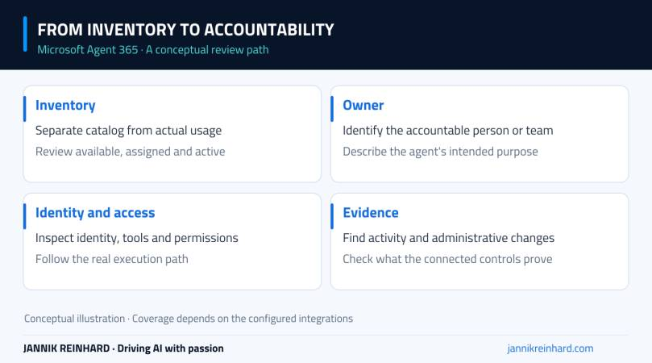
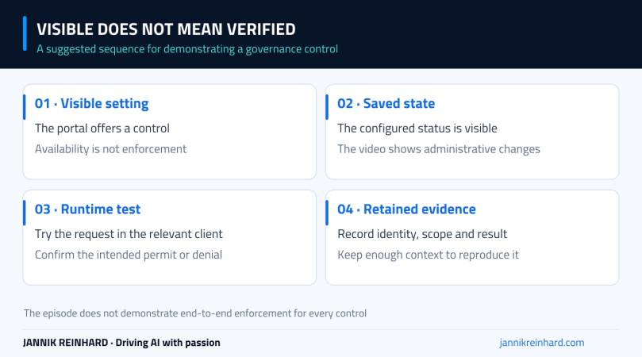

Microsoft Agent 365 gives administrators a place to inspect the agents around their organization: which agents exist, who owns them and where their identities and management settings can be found. In this episode, I explore that experience in my demo tenant.
This is a portal overview with a few administrative actions, not a claim that the tenant has a complete, production-tested governance setup. Some agents are still drafts, activity is limited, and one policy-template flow does not accept the license state as expected. Those details are part of the walkthrough.
Video language: German · Duration: 15:38 · Released 30 September 2026. The recording reflects the portal and demo-tenant state at the time it was made; availability depends on licensing and rollout.
Start with the agent inventory
In the Microsoft 365 admin center, I open the Agents area and its overview. It brings together inventory and management information, including agents associated with Foundry and Copilot Studio and catalog entries from other publishers.
That last distinction matters. A large registry count does not mean that every listed agent is actively used in the organization. In the video, many entries come from the available catalog, while my own test agents have little or no recorded usage.
I would separate three questions when reviewing this page: what is available, what has been approved or assigned, and what is actually being used? Combining those into one number can make a demo tenant look much busier than it is.

A conceptual map of the review path. Each connection still needs configuration and evidence in your own environment.
Open an agent card and find the accountable person
The agent card is a useful place to begin a review. I look at its description, creation details, owner and available identity information. The demonstrated agent is still a draft and has not been used as a production service.
A description is not cosmetic metadata. A reviewer should be able to tell what the agent is supposed to do without finding its creator and asking for a private explanation. The same is true of ownership: there should be a person or team able to explain a change, investigate a failure and retire the agent when it is no longer needed.
Around 2:12, I follow the identity link into Microsoft Entra. The recording shows the identity object and ownership context. It does not demonstrate every possible access policy against that identity.
For background on how the products fit together, my Microsoft 365 agents overview explains the wider terminology. This episode focuses on what the administrator can inspect in the portal.
An agent’s useful capabilities often come from its tools and data access. The agent card and related areas help reveal that context, but the exact information available depends on the agent and its integration.
The example card does not show an active, tool-heavy production workflow. I therefore do not treat an empty activity view or a simple relationship map as evidence that the environment has no risk. It may simply mean that the relevant activity has not occurred or is not represented there yet.
In a real review, I would ask which identity calls each tool, which permissions that identity has, and what happens if the request is denied. The answer should describe the actual execution path, not only the agent’s intended purpose.
Blocking is visible; enforcement still needs a test
In the recording, I block a catalog agent with a reason and later block a tool. After refreshing the tool view, the changed state is visible. That demonstrates an administrative state change in the portal.
It is not the same as demonstrating a denied end-user request through every possible client. To establish the effect for your environment, repeat a controlled request through the relevant supported application and confirm the expected outcome and audit evidence.
This is the same distinction I make in my Foundry guardrails walkthrough: configuration, assignment and observed enforcement are separate stages. Keeping them separate makes a governance demonstration much more credible.

A suggested proof sequence. The episode shows portal states, not a complete end-to-end enforcement test for every control.
Connected platforms and requests
At approximately 5:56, I open the connected-platforms area and review options for bringing in information beyond the immediate Microsoft environment. I do not complete a third-party platform connection in this episode.
For a real connection, I would first check the supported integration, requested permissions and scope of the information it brings into the registry. “The platform is listed” and “our agents from that platform are connected and current” are different statements.
The tools area also exposes categories such as plugins, skills, MCP servers and connectors in the demonstrated interface. Requests provide an administrative route for reviewing what users want to make available. That route needs an owner and a response process; a growing pending queue is not a governance outcome by itself.
Settings, policies and the license warning
The later part of the video reviews feedback, management rules, publisher choices, sharing, access and tags. These settings can affect a broad audience, so I would decide the intended scope before applying a convenient default to everyone.
The policy-template flow also produces a licensing warning even though the demo account has been assigned a trial license. The video does not resolve that inconsistency or establish its root cause. I would verify license assignment, required roles and current prerequisites before assuming that the control is ready.
Microsoft’s Agent 365 overview is the current starting point for product scope and requirements. Do not infer exact entitlement from a menu appearing in your tenant, and do not use this recording as a fixed licensing or pricing guide.
What I would prove next
My follow-up would focus on one agent with a clear owner, a known identity and one meaningful tool action. I would run a permitted request, a request that should be denied, and a change to the agent’s access. Then I would find the evidence for all three.
That gives us a much stronger basis for exploring the surrounding Entra, Purview and Global Secure Access controls in later episodes. The purpose of this first video is to understand the management surface and its limits, not to imply that every connected protection is already configured.
The practical takeaway: use the inventory to start asking better questions about ownership, access and activity. Then follow those questions into a real request and a verifiable result.
Stay healthy, Cheers Jannik
Newsletter
New posts, straight to your inbox.
Hands-on guides on Intune, AI and Azure.
190+ guides · 5x Microsoft MVP · No spam, unsubscribe anytime · Privacy